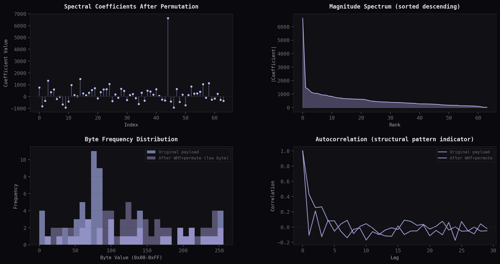

Investigatingthe boundariesof systems.
Independent vulnerability analysis, reverse engineering, and incident response documentation. Every analysis is published after a vendor patch or responsible disclosure, with detection artefacts and mitigation steps defenders can use on day one.
The evidence board.
Select a publication. The figure, its forensic metadata, and the technical thread switch together — nothing here is decorative, every label traces to the article.

FIG. 03 — SPECTRAL ANALYSIS 2394 × 1267 · PNGHardware remembers
every trace.
Macro footage of a printed circuit board — recorded detail, not a render. What looks like architecture is evidence: every pad, via, and fracture arrived here through a process someone has to answer for.
void fwht(int *x, int n) {
for (int h = 1; h < n; h <<= 1)
for (int i = 0; i < n; i += h << 1)
for (int j = 0; j < h; j++) {
int a = x[i + j], b = x[i + j + h];
x[i + j] = a + b; x[i + j + h] = a - b;
}
}Integer-only butterfly. No S-boxes, no crypto constants, no math library. Full technique note
What I actually work on
Four lanes, one standard: publish only when the finding is verified, the fix is shipped, and a defender can detect the risk without re-running the attack.
- 01 Vulnerability Analysis Root-cause writeups for disclosed CVEs: the broken invariant, the exact endpoint or code path, and why the patch holds.
- 02 Detection Engineering Suricata rules, Sigma and SIEM queries, and audit-log checks shipped with every report, so detection lands with the disclosure.
- 03 Reverse Engineering Disassembly and behavioural analysis of binaries and obfuscation techniques, from transform-based evasion to shellcode delivery.
- 04 Incident Response Forensic and threat-intelligence notes that help responders validate scope, hunt for the pattern, and close the loop.
Checked-out experiments.
Only real repositories. One featured, the rest as index entries — status included, no invented claims.